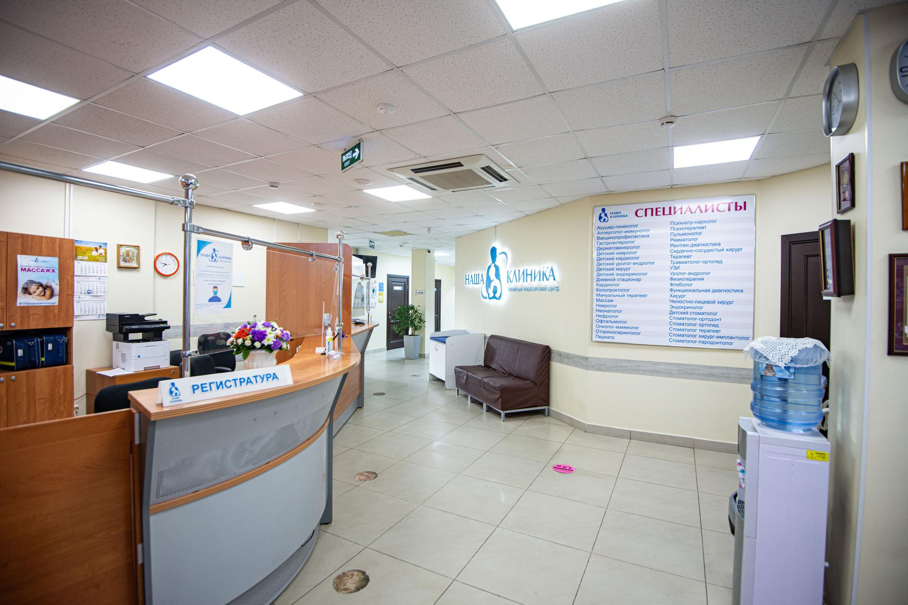

Наша клиника
Федеральная сеть клиник экспертной онкологии, работающих под брендом «Евроонко», — российская сеть частных специализированных онкологических центров, предоставляющих услуги по диагностике и лечению рака по современным мировым стандартам.
Свою историю «Евроонко» ведёт с 2011 года, когда в центре Москвы в тихом и уютном месте в элегантном особняке открылся специализированный онкологический центр. Несмотря на достаточно компактные размеры, клиника в Москве обладает всем необходимым для диагностики и лечения даже самых тяжёлых пациентов.
Неравнодушное отношение к пациенту и его родным — это тот фундамент, на котором из одной клиники в Москве выросла целая сеть. С 2019 года «Евроонко» существует как федеральная сеть клиник экспертной онкологии. Клиники и представительства сети открыты уже в пяти городах России. Это клиники в Москве, Краснодаре и Санкт-Петербурге, информационно-сервисные центры в Самаре и Нижнем Новгороде.
Один из важнейших принципов нашей работы — пациентоориентированность, когда в приоритете не интересы медицинского учреждения или отдельных врачей, а потребности пациента, качество его лечения и комфорт, в том числе психологический. Поэтому нам доверяют самых близких людей. Более 10000 пациентов ежегодно обращаются к нашим врачам и многие из них приходят по рекомендации тех, кто ранее уже был в клиниках «Евроонко».
10 причин обратиться в «Евроонко»:
- Инновационные методы диагностики и лечения
- Высочайший уровень сервиса и заботы
- Мы там, где вам удобно
- Экстренная госпитализация
- Международные протоколы и система контроля качества
- Второе мнение и консилиумы ведущих российских и зарубежных врачей
- Экспертность в паллиативной помощи
- Индивидуальный подбор терапии, человеческое отношение
- Просвещение пациентов и их родственников
- Помогаем даже в самых сложных случаях
Наша миссия:
обеспечить пациентам доступ к инновационным медицинским технологиям, современным
методам лечения и
высококвалифицированной медицинской помощи в области хирургии и онкологии, основанным на лучших мировых
практиках.
Наша история
- декабрь2020
- Открытие первой клиники «Евроонко» в Москве Начало работы консультативно-диагностического центра и дневного стационара
- апрель2021
- Открытие второй очереди стационара, отделения хирургического лечения злокачественных опухолей, реанимации и интенсивной терапии
- август2020
- Открытие рентгенэндоваскулярной операционной
- январь2021
- Первое дерматоскопическое исследование на немецком аппарате FotoFinder
- сентябрь2019
- Создание Службы сопровождения пациентов (Patient Relations)
- ноябрь2020
- Запуск авторской программы «Фокус на онкологии» на радио Mediametrics
Почему мы?
Фокус на профессионализме
уникальная команда специалистов с опытом работы в ведущих онкологических центрах РФ
тесное сотрудничество с лидирующими мировыми клиниками
высокий уровень ответственности за пациента
Каждый врач «Евроонко» — эксперт в своей сфере. Мы собрали уникальную команду специалистов, за плечами каждого из которых большой опыт клинической практики и научной деятельности в ведущих онкологических центрах РФ: Российского онкологического научного центра им. Блохина, Московского областного института онкологии им. Герцена, Научного центра рентгенорадиологии и рентгенохирургии. «Евроонко» активно сотрудничает с лидирующими онкологическими центрами Европы, США и Израиля. Нашим пациентам также доступны заочные консультации в формате телемедицины ведущими специалистами США, Германии, Швейцарии и Израиля.
Фокус на качестве
- многоуровневая система контроля качества
- двойная верификация диагноза
- чёткое следование принципам доказательной медицины
- международные протоколы лечения ASCO и NCCN
Мы работаем строго в соответствии с принципами доказательной медицины. В клиниках сети действует многоуровневая система контроля качества, которая в том числе включает независимую оценку работы врачей внешними экспертами. Результаты лабораторных тестов, КТ, МРТ и ПЭТ, образцы гистологических исследований при необходимости контролируются в лабораториях и клиниках Германии иШвейцарии. Врачи работают в соответствии с международными протоколами ASCO и NCCN.